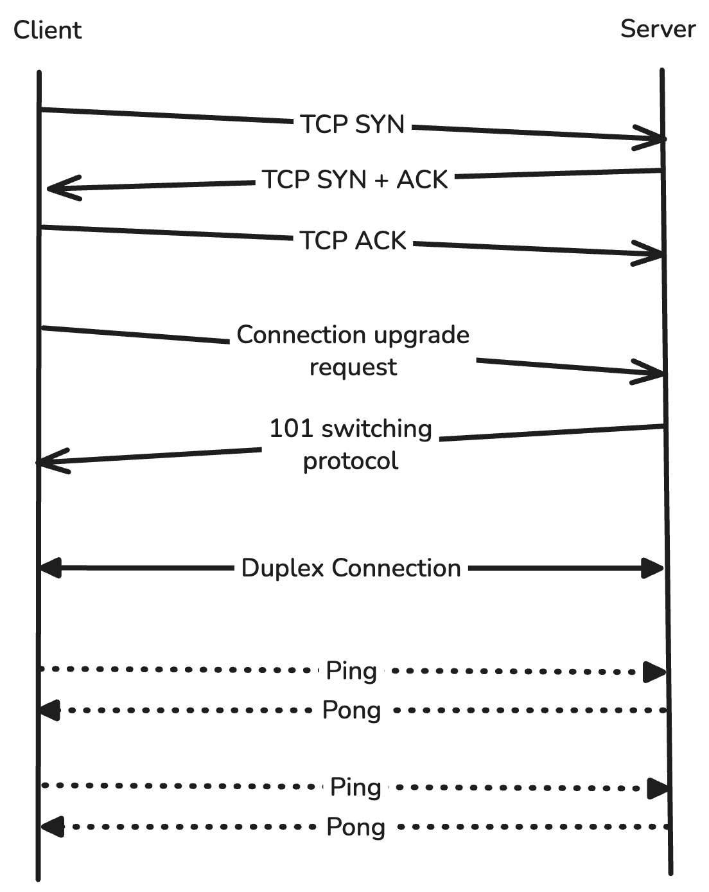

System Overview
This project is not a notebook experiment or a single script that places an order. It is a live, event-driven trading runtime where market data, signal generation, order execution, live PnL calculation, CSV persistence, and Telegram notifications run as coordinated parts of one system.
First we will see the micro-level architectures and then we will check how to scale this system to a algo-trading-as-a-serive business effectively and the cost-optimized way.
The bot starts from main.py. It validates the broker session, checks whether
the configured market segment is open, builds an initial strategy state from historical
candles, initializes CSV files, and then starts two long-running websocket threads:
one for market data and one for order events.
The architecture is deliberately split into responsibilities. The data websocket owns
market ticks and signal generation. The order websocket owns trade execution and trade
lifecycle monitoring. Helper threads handle persistence and notifications. The modules
communicate through queue.Queue objects and protect shared mutable state with
threading.Lock.
Market-data side
Receives live ticks for SYMBOL, synchronizes calculations to the selected
timeframe, refreshes candle-derived indicators, and emits decisions through
decision_queue.
Order side
Listens for decisions, derives executable strike information, places broker orders, subscribes to the active trade symbols, tracks live PnL, trails stop levels, and exits positions when the runtime exit condition is met.
In this blog, I have discussed the priciples I have used to build the system, starting from the websocket to the inter-thread communication. How I avoid the race conditions and how this system can be scaled to build a algo-trading-as-a-service business.
After the technical discussion, I will discuss the core concepts of trading which will be focused on option selling and the psychology behind the strategy, along with that I will cover the most important trading concept, i.e. risk management. So, let's begin...
How an Idea Became a System
The starting idea was simple: build a personal trading bot that can watch the market continuously and act only when a predefined technical condition appears. The difficult part is that live trading is not a single calculation. It is a coordination problem.
A production-like bot has to answer several engineering questions at the same time:
- How does the bot authenticate and recover when the access token expires?
- How does it avoid using an incomplete live candle for strategy calculations?
- How does the market-data stream tell the order stream that a decision exists?
- How does the system prevent multiple trades from being opened at the same time under the same strategy and the symbol?
- How does it monitor PnL after a trade is live without blocking the data websocket?
- How does it persist market state and trade state without making websocket callbacks slow?
The final design is a threaded, queue-driven runtime. Instead of making every component call every other component directly, each part owns one responsibility and emits messages into queues. This makes the system easier to reason about because every cross-thread interaction has a named channel.
System Micro Design
Boot Sequence
The lifecycle begins in main(). The bot reads the latest access token, calls check_market_status(), and either
continues into the live runtime or starts the OAuth renewal flow.
Fetch token. _fetch_access_token() reads the saved
broker access token so the bot can connect without repeating OAuth every run.
Check market status. check_market_status() uses the configured
exchange and segment to confirm that live trading should start.
Synchronize to timeframe. _wait_for_next_minute()
waits for a clean boundary so the strategy is initialized around the same cadence as
live candle updates.
Build initial state. The bot fetches historical candles, calculates strategy information states, writes the initial data CSV, and resets the PnL CSV header.
Start runtime threads. Data websocket, order websocket, CSV writers, and Telegram listener are started as separate threads.
def main(need_last_candle=False):
access_token = _fetch_access_token()
response = check_market_status(client_id, access_token)
if response["processed"]:
_OAuth_verified(client_id, access_token, need_last_candle)
else:
_renew_OAuth()The design also separates daemon and non-daemon threads intentionally. The websocket threads are non-daemon because they are the core runtime and should keep the process alive. Helper threads are daemon threads because they exist to serve the live runtime and can stop when the main trading process stops.
WebSocket Architecture
The project uses two persistent websocket connections from the Fyers SDK:
FyersDataSocket for live symbol ticks and FyersOrderSocket for broker
order, trade, position, and general event updates.
This split matters. Market ticks can arrive very frequently, while order events are lifecycle events. Combining both into one responsibility would make the code harder to reason about. By keeping them separate, the data stream can focus on signal timing and the order stream can focus on execution correctness.

main thread. Data websocket and Order websocket. We are going to discuss each of them one by one with their major tasks in focus.
Data WebSocket
This websocket is responsible to handle any data related tasks, like subscribe to a particular symbol, getting continuous data update and unsubscribe to a symbol. Followings are the major tasks of this websocket:
Update Latest Messages
data_websocket() subscribes to the configured market symbol using
DATA_TYPE = "SymbolUpdate". Incoming messages are handled by
_ds_onmessage(). If the tick belongs to the primary symbol, it updates
latest_messages; if it belongs to an active trade symbol, it updates
latest_traded_message.
def _ds_onmessage(message):
symbol = message.get("symbol")
if symbol is not None:
if symbol == SYMBOL:
with latest_message_lock:
latest_messages[symbol] = message
else:
with latest_traded_message_lock:
latest_traded_message[symbol] = messageThe callback does very little work by design. It only updates the latest in-memory tick. This keeps the websocket callback fast and reduces the chance of blocking the SDK event loop during high-frequency tick bursts.
Scheduled Candle Processing
The data websocket does not run the strategy on every tick. Instead,
_ds_print_latest_message_on_schedule_thread() wakes up at the next whole-minute
boundary plus SYNC_DELTA_TIME. This is the bridge between tick-level data and
candle-level strategy logic.
The project intentionally ignores the most recent incomplete candle when fetching historical
candles in get_candles_data(). That avoids a common live-trading bug: generating
signals from a candle that is still forming.
Dynamic Subscriptions
The system starts by subscribing only to the primary market symbol. After a trade is placed,
the order side pushes selected trade symbols into to_be_subscribed_queue. The
data websocket consumes that queue and subscribes to those symbols in the same data socket.
symbols_to_subscribe = [
strike_price_info["selected_strikes"]["selling_strike_info"]["symbol"],
strike_price_info["selected_strikes"]["buying_strike_info"]["symbol"],
]
data_socket.subscribe(symbols=symbols_to_subscribe, data_type=DATA_TYPE)This is an important design choice: the order thread decides what needs to be monitored, but the data websocket performs the actual market-data subscription. Ownership remains clean because only the data socket talks to the data stream. Once symbols are subscribed, the broker pushes updates only when subscribed instruments change.
Dynamic Unsubscriptions
Similar to the subscription thread, there will be another thread called unsubscription thread will be run by the data_websocket, it will listen to the shared queue to_be_unsubcribed_queue. This queue will maintain those symbols, whose trades are already done, now no need to gather data for those symbols.
symbols_to_unsubscribe = to_be_unsubcribed_queue.get(timeout=0.1)
if symbols_to_unsubscribe is not None:
data_socket.unsubscribe(symbols=symbols_to_unsubscribe, data_type=DATA_TYPE)
to_be_unsubcribed_queue.task_done()Order WebSocket
This websocket will be responsible for the order related tasks. Like placing order, trailing the stop-loss, exit the positions, etc. Followings are the major tasks of this websocket:
Entering a Trade
The data side never places a broker order directly. It emits a deliberately small
decision contract—a directional intent or NA—into
decision_queue. The order websocket consumes that contract and first takes the
is_trade_ongoing_lock. If the single-trade gate is already set, the instruction is
ignored; otherwise the runtime reserves the trade slot before doing slower broker work. That
reservation is important: it prevents two closely timed data evaluations from creating two
overlapping executions.
For an admitted instruction, the execution side requests the current option chain and builds
a paired, defined-risk instrument set. The confidential signal rules, strike-selection rules,
and parameters are intentionally not published here. What matters for the system design is the
hand-off: selected instrument metadata moves to to_be_executed_strike_price_queue,
where a dedicated execution worker submits the orders. The present flow sends the protective
buy limit order first and the short-leg limit order second. If both placement calls return an
accepted response, it records the quoted entries, a deployed-funds estimate, and the initial
stop state; it then asks the data websocket to begin streaming both active-leg symbols.
Intent arrives. The order listener receives a non-secret directional instruction from decision_queue.
Trade slot is reserved. The shared one-trade gate prevents a second instruction from racing the first one.
Broker instruments are prepared. Current option-chain information is converted into the paired execution payload without exposing the private selection method.
Orders and monitoring are connected. After successful placement responses, the active symbols, entries, risk state, data subscriptions, CSV records, and notifications are wired together.
The order socket also subscribes to broker OnOrders, OnTrades,
OnPositions, and OnGeneral events. In the current personal runtime,
these callbacks print the broker payloads for visibility. They are valuable telemetry, but they
are not yet used as the authoritative transition source for order state; that distinction
becomes important in the hardening section.
Ongoing Trade Management
Once the active symbols are subscribed, the data websocket keeps their most recent ticks in
latest_traded_message. The trade-management path combines the two leg prices with
their stored entry quotes and quantity to estimate a live, paired-position PnL. The same path
owns the application-side stop level: it can ratchet the stop higher as a trade becomes
profitable, and on a stop breach it requests a pair-level broker exit, clears the shared trade
state, queues the symbols for unsubscription, writes an audit row, and sends a Telegram alert.
This separation is deliberate. The data callback only records the latest tick; it does not do broker HTTP calls, file writes, or notification delivery. The order/risk path consumes the resulting state and decides whether a lifecycle action is required. That keeps fast market-data handling independent from comparatively slow and failure-prone external operations.
Queue Communication
The heart of the project is its producer-consumer model. Instead of having threads call each
other directly, they exchange messages through queues defined in scripts/shared_vars.py.
This creates a clean boundary between fast event callbacks, slower broker operations, file I/O,
and notification delivery.
| Queue | Producer | Consumer | Purpose |
|---|---|---|---|
decision_queue |
Data websocket scheduler | Order websocket decision listener | Transfers a strategy instruction such as LONG or SHORT. |
to_be_executed_strike_price_queue |
Order decision listener | Order execution listener | Transfers selected instrument information to the execution routine. |
to_be_subscribed_queue |
Order execution listener | Data websocket subscription listener | Requests live tick subscriptions for the active trade symbols. |
to_be_unsubcribed_queue |
PnL monitor | Data websocket unsubscription listener | Removes symbols from the data stream after exit. |
tick_queue |
Data websocket scheduler | CSV writer thread | Persists latest strategy rows without blocking websocket logic. |
live_pnl_queue |
Order/PnL runtime | PnL CSV writer thread | Appends live PnL snapshots to the PnL CSV. |
telegram_message_sending_queue |
Execution and PnL runtime | Telegram listener thread | Sends operational messages asynchronously. |
Each queue listener follows the same pattern: call get(timeout=0.1), process
only when a message exists, call task_done(), and continue on
queue.Empty. The timeout is important because it lets threads periodically check
scheduler_stop instead of blocking forever.
while not scheduler_stop.is_set():
try:
message = tick_queue.get(timeout=0.1)
if message is not None:
_update_data_csv(message)
tick_queue.task_done()
except queue.Empty:
continueLocks and Shared State
Queues are used for message passing, but a live trading bot also needs shared state: latest ticks, whether a trade is already open, current trade metadata, and latest trade-symbol market data. Since multiple threads can read and write these dictionaries, the project wraps each shared object with a dedicated lock.
| State | Lock | Why It Exists |
|---|---|---|
latest_messages |
latest_message_lock |
Stores the latest tick for the primary configured symbol. |
latest_traded_message |
latest_traded_message_lock |
Stores latest ticks for symbols involved in the active trade. |
is_trade_ongoing |
is_trade_ongoing_lock |
Prevents the system from opening overlapping trades. |
ongoing_trade_info |
ongoing_trade_info_lock |
Stores entry prices, active symbols, current stop level, and deployed capital. |
The lock scope is kept short. For example, _ds_onmessage() acquires the lock only
long enough to update one dictionary entry. The PnL monitor acquires
ongoing_trade_info_lock only long enough to copy the values it needs, then performs
calculations outside the critical section.
with ongoing_trade_info_lock:
trading_symbols.append(ongoing_trade_info["SELLING_SYMBOL"])
trading_symbols.append(ongoing_trade_info["BUYING_SYMBOL"])
entry_price_selling_leg = ongoing_trade_info["SELL_ENTRY_PRICE"]
entry_price_buying_leg = ongoing_trade_info["BUY_ENTRY_PRICE"]
current_sl = ongoing_trade_info["CURRENT_SL"]That pattern reduces lock contention. In a live system, the data callback should not be delayed because another thread is doing HTTP work, CSV writing, or Telegram messaging. The code therefore uses locks for small memory operations and queues for work that may take longer.
Execution State and Broker Truth
When the order socket opens, it launches three listener responsibilities: decision intake,
order submission, and live-trade monitoring. The first two form the current execution path.
The trade gate changes to active before order submission so another decision cannot race into
the same account state. After the placement responses, the runtime initializes
ongoing_trade_info, which holds the active symbols, entry quotes, current stop,
and estimated funds associated with the trade.
There is an important distinction between an order accepted by a placement endpoint and a filled paired position. The current code checks the immediate response to each REST placement call, but it does not yet turn subsequent order, trade, and position events into a durable state machine. As a result, quoted entry values and balance snapshots are useful operational estimates, not authoritative fill or margin records.
submitted, partial,
filled, rejected, hedged, and closed—with
a compensating action for every unsafe state.
PnL and Risk Runtime
The intended PnL path marks both legs using their latest subscribed prices, compares that paired mark with stored entry quotes, and multiplies the net change by the configured quantity. It keeps the risk calculation at the combined-position level rather than judging either option leg in isolation. This is the right conceptual boundary for a paired structure: an individual leg can look adverse while the combined trade remains inside its defined loss profile.
The current stop begins as a configurable fraction of the runtime's estimated deployed funds (the checked-in configuration uses 1.5%). When the estimated PnL clears successive profit steps, the code only moves the stop in the favorable direction. On a stop breach, its intended sequence is exit request, state reset, unsubscribe request, CSV event, and Telegram alert. This is a loss-containment mechanism, not a promise that an exit will occur at the displayed threshold: it depends on fresh quotes, a running process, a healthy broker connection, and a successful exit response.
Before capital is placed behind this path, it must be made fill-aware and tick-aware. A missing first tick can currently yield an unusable quote, and a balance difference immediately after accepted limit orders may not represent final margin or filled capital. Broker positions, average fill prices, margin data, quote timestamps, and exit acknowledgements should become the inputs to risk state instead of inferred values alone.
Persistence and Observability
The bot writes two local CSV files: one for candle-derived strategy-state observations and one
for live-trade snapshots. File I/O is intentionally separated into helper threads. The data
websocket pushes strategy rows into
tick_queue; the helper thread consumes that queue and calls
_update_data_csv(). Similarly, live PnL snapshots go through
live_pnl_queue before reaching _update_pnl_csv(). The Fyers SDK also
receives a local log path, so broker-library diagnostics do not have to share the execution
path with the application logs.
Telegram notifications follow the same principle. Instead of calling the async Telegram
sender directly from execution code, the bot places messages into
telegram_message_sending_queue. The listener thread then runs
asyncio.run(_send_telegram_message(message)). This keeps broker execution,
websocket callbacks, and notification delivery loosely coupled.
These outputs are useful operational evidence—they help reconstruct what the process saw, decided, and attempted—but CSV is not an authoritative broker ledger and it is not a restart-safe open-position store. A restart, missed write, stale tick, or partial fill must be reconciled against broker order and position data before it is treated as fact.
Data CSV
Stores timestamped completed-candle observations and derived strategy state for research and audit, without exposing the proprietary decision rule.
PnL CSV
Stores live trade monitoring rows: timestamp, PnL, active symbols, entries, current stop, and capital deployed.
Engineering Hardening
A trading runtime is only as safe as its behaviour when the happy path breaks. The existing project has several thoughtful safeguards, but it is still a personal, single-process system. This section separates protections that exist today from the controls required before treating it as an unattended production service.
Controls Already Present
| Control | What the Current Runtime Does | Why It Matters |
|---|---|---|
| Session and market gate | It validates the stored broker token, routes an invalid token into a manual OAuth renewal flow, and starts only when the configured market segment reports open. | Prevents an obviously invalid session or closed-market start from silently entering the trading loop. |
| Completed-candle discipline | Startup and scheduled evaluations align to the configured timeframe with a small broker-sync offset, then exclude the still-forming candle from the historical response. | Keeps the decision layer from reacting to a value that can change before the bar is complete. |
| Short critical sections | Dedicated locks guard each shared dictionary, while queues move broker work, disk writes, and Telegram delivery away from fast data callbacks. | Reduces race conditions and limits the chance that slow I/O delays tick handling. |
| Cooperative stop signal | Socket error and close callbacks set scheduler_stop; queue workers use timed get() calls so they can observe it. |
Provides a common mechanism for long-running loops to stop instead of blocking indefinitely. |
| Certificate verification | The SSL helper selects a CA bundle, enables certificate verification and hostname checking, and passes those settings to the websocket client. | Protects the transport layer from treating an unverified TLS connection as trustworthy. |
| Operational separation | CSV writes and Telegram messages run through helper workers rather than directly inside the order or data callback. | Leaves a trace of activity while avoiding notification or disk latency in the core path. |
These are meaningful foundations, not a claim of fault tolerance. OAuth renewal still requires a person to complete the authorization step; a socket error currently stops work rather than reconnecting; and local CSV files provide useful evidence rather than durable recovery state.
What Must Be Closed Before Unattended Trading
Make broker events the source of truth. Persist a lifecycle for every client order and reconcile it against confirmed broker orders, fills, positions, average prices, and margin. A placement response alone must never be treated as a completed trade.
Design a compensating path. Every partial, rejected, cancelled, or timed-out leg needs an explicit policy: retry, cancel, hedge, flatten, and alert. Terminating a process cannot be the final response to an unpaired position.
Make risk workers durable. Start mark-to-market monitoring from a confirmed-open state, require fresh price timestamps for both legs, validate exit acknowledgements, and preserve enough state to resume or reconcile after a restart.
Recover deliberately. Use reconnect with backoff and jitter, bounded queues with backpressure, idempotent order identifiers, retry policies that understand broker rate limits, and a dead-letter path for work that cannot be completed safely.
Operate it like a service. Add structured logs, correlation IDs, metrics for queue depth and tick freshness, health checks, alerts, a manual kill switch, and an immutable event trail separate from human-readable CSV reports.
STRATEGY_STARTING_TIME, STRATEGY_ENDING_TIME, and
HARD_EXIT_TIME are declared in the configuration but are not referenced by the
current runtime. Likewise, the data socket is configured with reconnect=False.
A production runbook must implement and test session admission, forced end-of-session handling,
disconnect behaviour, and a safe shutdown/reconciliation sequence.
Research Validation Is a Separate Layer
The repository includes a historical research script that walks candle data and records decision outputs to an analytics CSV. It is valuable for inspecting whether a private hypothesis behaves consistently over a sample. It is not a full execution simulation: it does not model confirmed option fills, bid-ask spread, slippage, broker charges, latency, partial execution, position exits, or real PnL. Those inputs need their own test harness and replay data before live risk assumptions can be trusted.
Scale the System
The current program is intentionally a single-account, single-process bot. Its queues are not yet a distributed platform, but they are an excellent map of the boundaries that a scalable platform should extract. Scaling here means preserving ordered account state and risk controls, not simply adding more threads.
Turn the Existing Queues into Service Boundaries
| Current Boundary | Scaled Responsibility | Primary Partition |
|---|---|---|
| Data websocket and latest-tick dictionaries | Market-data ingestion, normalization, symbol subscription management, deduplication, and a low-latency latest-price cache. | Instrument or market-data shard |
| Scheduled strategy decision | Versioned strategy workers that consume completed-candle events and emit immutable, auditable intent events. | Strategy and instrument |
| Order websocket execution workers | A broker gateway that serializes actions per account, assigns idempotency keys, observes broker limits, and reconciles fills. | Broker account |
| In-process PnL and stop state | An independent risk service that consumes confirmed fills and fresh marks, applies pre-trade and live limits, and can block or flatten execution. | Account and portfolio |
| CSV files and local logs | An immutable order/position/audit store, reporting warehouse, and short-lived cache for current state. | Tenant and account |
| Telegram queue | An outbox-backed notification service with delivery status, deduplication, escalation rules, and operator preferences. | Tenant and notification channel |
Reference Event Flow
Ingest once, fan out safely. A market-data service validates and timestamps incoming broker data, then publishes normalized ticks and completed-candle events to a durable event stream.
Evaluate privately and deterministically. A strategy worker consumes the completed state for its assigned instrument and produces a versioned intent or an abstention event. It cannot place an order itself.
Authorize risk before execution. The risk service checks account, portfolio, quote-freshness, session, and exposure constraints. Only an approved intent reaches the account-serialized execution gateway.
Reconcile every transition. Broker acknowledgements and websocket events update the order ledger. The same events drive live risk, reporting, and notifications without asking one shared in-memory dictionary to be the truth.
Data Ownership, Isolation, and Operations
A multi-user system needs tenant isolation by design. Credentials should be encrypted and scoped to the account; an account's order stream must be serialized by one logical owner; and no customer should be able to read another customer's events, positions, logs, or reports. Rate limits, broker failures, and a noisy account must be contained so they cannot starve the rest of the platform. This is why the natural scaling key is an account or account-strategy actor, not an arbitrary pool of workers all sharing mutable global state.
The migration should be incremental: first make the single-process runtime fill-aware and restart-safe; then put decisions, orders, fills, and risk events into a durable log; next externalize the account executor and risk engine; only then add tenant-facing APIs, reporting, and horizontal shards. Any service offered to other users must also be designed around the broker, exchange, security, and regulatory obligations that apply to its target market.
Strategy Psychology
The valuable part of a strategy is not a colourful chart or a single trigger. It is the discipline to state a falsifiable hypothesis, define when the system should do nothing, and preserve the same behaviour when a real position makes the outcome emotionally significant. The proprietary rule and its parameters are intentionally omitted from this article.
Make Abstention a First-Class Outcome
The strategy-to-runtime contract is deliberately narrow: a completed observation becomes a
directional intent or NA. NA is not a missed opportunity; it is an
explicit decision that the private conditions are not sufficiently aligned. Treating no-trade
as a valid output removes pressure to manufacture activity simply because the market is open or
the bot is running.
Separate Four Different Decisions
Hypothesis
Define what market behaviour is being tested, what would falsify it, and which observations may be used. This belongs in research, not in an emotional live-session adjustment.
Signal
Convert completed market state into a small, deterministic intent. The production interface should reveal only what execution needs, not private thresholds or rule internals.
Execution
Decide whether an approved intent can actually be expressed with fresh quotes, liquid instruments, valid session state, and a confirmed risk budget.
Risk
Decide the maximum acceptable loss, exposure, and failure response before the order is sent. A good signal never overrides a risk control.
Protect the Process from the Operator
Live markets create a predictable set of temptations: entering early because a move looks obvious, changing a rule after a loss, widening a stop to avoid being wrong, or doubling size to recover quickly. The architecture counters some of this by evaluating on a schedule, using completed candles, isolating execution from the strategy, and allowing only one active trade. The operating process must complete the rest: version every strategy change, keep research and production configurations separate, record the reason for any manual intervention, and never silently alter a running rule set.
Confidence should come from a broad, realistic sample and from knowing how a rule behaves in adverse regimes—not from a short run of wins. Historical research needs out-of-sample periods, execution assumptions, and failure scenarios. Forward testing should begin with the smallest meaningful exposure. The goal is not to predict every move; it is to execute a repeatable process whose invalidation and loss limits are known in advance.
Why Option Selling
Option selling can be attractive because option premium is affected by the passage of time and by changes in implied volatility. That attraction should never be confused with easy or guaranteed income: short option exposure is typically short convexity, meaning a rapid adverse move can dominate many small premium gains.
Why the System Uses a Paired Structure
This runtime does not frame the trade as an unbounded naked sale. Its execution flow submits a protective long option alongside the short option, creating a paired, defined-risk structure. The protective leg does not remove risk, and it has its own premium and liquidity cost, but it puts an architectural ceiling around the most severe tail exposure that a naked short can create. The exact instrument selection and market thesis remain private.
Potential Structural Benefit
Premium can decay as time passes and uncertainty changes. A system can monitor the paired position consistently without relying on a human to watch every tick.
Structural Cost
Adverse moves, volatility repricing, gaps, widening spreads, poor liquidity, and asymmetric payoffs can cause losses quickly. A protective leg reduces tail exposure; it does not make the trade safe by default.
Why Automation Helps—and Where It Does Not
Automation is useful for coordinated subscriptions, paired-order bookkeeping, fresh PnL marking, predefined exits, and event logging. It is not a substitute for liquidity checks, broker reconciliation, capital limits, or judgment about whether a system has been sufficiently validated. In fact, automation amplifies both discipline and defects: a well-designed risk control acts consistently, while an unhandled partial fill or stale price can act consistently wrong. The engineering quality of the execution and risk layers therefore matters as much as the market idea.
Risk Management
Risk management is the primary strategy. A signal only earns the right to be considered; risk decides whether it may be expressed, how much capital may be exposed, how it is monitored, and how the system behaves when the data, broker, or process is no longer trustworthy.
What the Current Runtime Enforces
| Layer | Current Behaviour | Important Limitation |
|---|---|---|
| Trade admission | A lock-protected global flag permits one active trade at a time. | It is process-local; a restart or another process has no knowledge of that flag. |
| Position structure | The protective buy leg is sent before the short leg, so the intended position is paired and defined-risk rather than naked. | Request acceptance is not fill confirmation, and an incomplete pair requires a compensating workflow that is not yet implemented. |
| Size and starting stop | Quantity is fixed in configuration. The initial application-side loss threshold is calculated from estimated funds deployed; the checked-in setting uses 1.5%. | Funds are inferred from balance snapshots around order requests, not confirmed fills and final margin. |
| Trailing protection | After the estimated PnL improves through configured steps, the application only ratchets the stop in the favourable direction. | The stop is not a broker-native protective order; it needs fresh ticks, a live process, and a successful exit API call. |
| Exit and audit | The intended breach path requests a pair-level exit, clears local state, removes data subscriptions, and emits CSV/Telegram activity. | Exit status, final fills, and position closure are not yet reconciled as an atomic lifecycle. |
Risk Must Have Independent Layers
Pre-trade risk. Verify market/session state, account authorization, available funds and margin, instrument validity, quote freshness, liquidity, maximum size, and account-level exposure before allowing an intent to reach the broker.
Execution risk. Track every leg from submission to final fill, enforce a maximum time for an incomplete pair, reject unexpected prices or slippage, and cancel, hedge, or flatten according to a precommitted recovery policy.
Live portfolio risk. Mark positions only with fresh, validated prices; cap per-trade loss, daily loss, number of trades, correlated exposure, and concentration. A central kill switch must override all new entries.
Operational risk. Treat stale feeds, broker outages, missing acknowledgements, restarts, and clock drift as risk events. Pause entry or flatten according to policy instead of continuing from uncertain state.
Post-trade risk. Reconcile internal records with broker statements, retain immutable audit events, inspect slippage and exceptions, and change controls only through a reviewed configuration/versioning process.
This project is an engineering case study, not investment advice or a recommendation to trade options. Anyone adapting the ideas should use appropriate paper testing, broker documentation, independent risk limits, and professional guidance suited to their jurisdiction and financial circumstances.